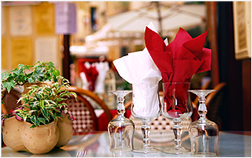

About Us
Craving some delicious food? Maybe you’re in the mood for a juicy steak? No matter what kind of meal you have in mind, The Restaurant is ready to prepare it for you.
Since 1973, The Restaurant has been the go-to diner for residents of Binghamton, NY. Our diner serves breakfast all day, in addition to wholesome and flavorful dining options for lunch and dinner. From burgers to salads, seafood to pastas, you’ll find all kinds of hearty meals prepared fresh at The Spot Restaurant. Our diner also has a full bakery with delicious baked goods and other treats, including our famous cheesecake. Sounds delicious, right?
The Restaurant is open daily from 5 a.m. to 11 p.m. We’re here to serve you the best food aroundOur Best Chefs
 Paul Bocuse is named the “Father of Culinary Art” in France. He’d been a cooking icon for several years. he is one of the best chefs to be affiliated with Nouvelle Cuisine, which isn’t a lavish cuisine as opposed to the traditional cuisine, as it provides value to fresh good quality ingredients
Paul Bocuse is named the “Father of Culinary Art” in France. He’d been a cooking icon for several years. he is one of the best chefs to be affiliated with Nouvelle Cuisine, which isn’t a lavish cuisine as opposed to the traditional cuisine, as it provides value to fresh good quality ingredients
Jamie Oliver is an English chef . He’s most widely known for his distinctive culinary that essentially center on organic food production and cooking. He’s up against ready-made food and emphasizes in fresh and 100% natural ingredients
 Wolfgang Puck is an American-Australian Chef. His speciality includes American Cooking developed by integrating elements of Asian, French and Californian methods and various premium quality ingredients from cuisines all over the world.
Wolfgang Puck is an American-Australian Chef. His speciality includes American Cooking developed by integrating elements of Asian, French and Californian methods and various premium quality ingredients from cuisines all over the world.
Follow Us
Email Updates
Join our digital mailing list and get news
deals and be first to know about events